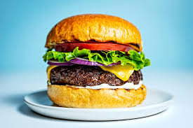

Burger

Description
A juicy beef burgur served on a toasted bun with lettuce,tomato and mayo.
Ingridinets
- Ground beef
- Garlic
- Butter
- Hamburger bun
- Lettuce
- Tomato
Instructions
- Roll ground beef into a large ball then flatten inot a hamburger patty
- Season patty with salt and pepper
- Heat a frying pan with olive oil
- Chop lettuce and tomato
- Place burger on the pan flipping it every 60 sec until medium rare
- After the burgur has been flipped once on each side add a tabel spoon of butter to the pan
- Use butter to baste until burger is fully cooked
- Assemble burger on top of the bun and topped with lettuce and tomato